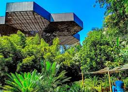

Parque Arví
Si lo que buscas es una tarde con un poco más de aventura, el Parque Arví es el lugar a donde debes ir. Hay tantas actividades al aire libre que te será difícil elegir entre ellas: puedes armar un pícnic, disfrutar de un trayecto en bicicleta, practicar un poco de senderismo, ver varias especies de aves o pasar una tarde sembrando árboles. Es, sin duda, un lugar para quienes disfrutan al máximo la naturaleza. Es recomendable que vayas con ropa cómoda pero también que te mantenga abrigado. Es uno de los parques para visitar en Medellín más populares. Adéntrate en él y descubre por qué.
Horarios
Abierto de lunes a domingo de 8:00 a.m. a 6:00 p.m.
Ubicación


Jardín Botánico
Tenemos que empezar por uno de los espacios naturales más grandes de Medellín. El jardín Botánico reúne varios ambientes naturales y los mezcla de manera atractiva con actividades educativas, restaurantes, espacios para investigar la variedad de especies naturales y arquitectura impresionante. Los edificios, los senderos, el teatro dentro del jardín y, sobre todo, el Orquídeorama - una creación arquitectónica que muestra la naturaleza como una obra de arte -, hacen de este uno de los jardines más innovadores del país. Empezar con el Jardín Botánico te llenará de aire fresco y te dejará listo para recorrer todos los parques de la ciudad.
Horarios
Abierto de martes a domingo de 9:00 a.m. a 4:00 p.m.
Ubicación



Normas de Ecología
En Medellín nos encontramos con un gran número de puntos de ecología. Estos puntos de ecología son especialmente destacados por su excelente calidad, la calidad de los productos y la calidad de los servicios. Sin embargo es importante tener en cuenta las normas para mantener el entorno ecológico en óptimas condiciones.
Respetar la flora y fauna
Evitar tocar, recolectar o dañar plantas y animales en su hábitat natural.
No arrojar basura
Utilizar los contenedores adecuados y mantener los espacios limpios.
Seguir los senderos designados
Caminar solo por las áreas permitidas para preservar la vegetación y evitar la erosión.
No alimentar a los animales
Evitar darles comida a los animales para prevenir dependencias y alterar su comportamiento natural.
No hacer fuego
Prohibido encender fogatas o usar dispositivos de calefacción, especialmente en áreas no designadas.
Controlar a las mascotas
En caso de permitirse, mantener a las mascotas bajo control y recoger sus excrementos.
Respetar las señales y normativas
Seguir las indicaciones y reglamentos establecidos para garantizar la seguridad y conservación del área.
No hacer ruido excesivo
Mantener un nivel de ruido bajo para no perturbar a la fauna ni a otros visitantes.
Ser responsable con el agua y energía
utilizar los recursos naturales de manera consciente y evitar desperdiciar agua y energía.